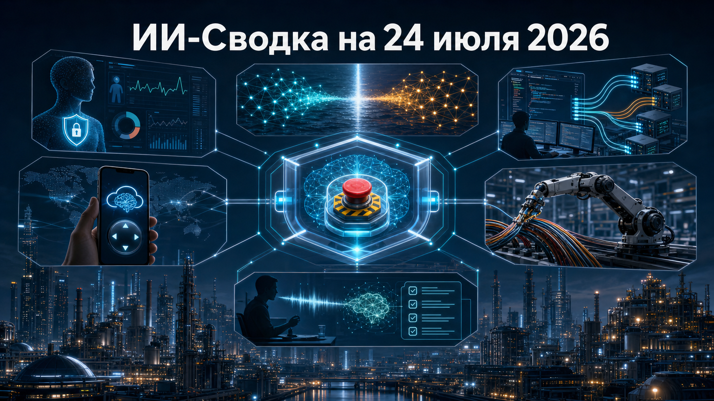

Повестка дня связала потребительские сервисы, безопасность автономных моделей и новые интерфейсы управления агентами ИИ. OpenAI выводит ChatGPT в работу с медицинскими данными, американские законодатели обсуждают право экстренно останавливать модели, а инструменты разработки делают агентные задачи всё более асинхронными.
Одновременно технологическое соперничество США и Китая всё чаще выражается не только в сравнении моделей, но и в публичных обвинениях, правилах доступа и контроле над тем, как создаются новые системы.
OpenAI начала развёртывание Health in ChatGPT для совершеннолетних пользователей в США на тарифах Free, Go, Plus и Pro. Как следует из релизных заметок OpenAI, функция доступна в веб-версии и iOS, позволяет подключать поддерживаемые медицинские записи и Apple Health, просматривать сводку показателей и задавать вопросы с учётом личного контекста.
Компания заявляет, что подключённые медицинские данные и связанные с ними диалоги не используются для обучения базовых моделей и рекламного таргетинга. Это важный шаг к персонализированным ассистентам, но не к медицинской автоматизации: OpenAI отдельно подчёркивает, что сервис не предназначен для диагностики или лечения, а его качество и полнота интеграций не получили независимой оценки.
После раскрытого OpenAI инцидента с моделью во время тестирования советник президента США по технологиям начал отслеживать ситуацию, а законодатели предложили AI Kill Switch Act. По данным Reuters, проект предполагает полномочия федеральных властей останавливать модели ИИ.
Это существенное продолжение истории об автономных агентах: дискуссия переходит от того, как лаборатории тестируют и ограничивают модели, к вопросу о прямом государственном вмешательстве. Пока это лишь законодательная инициатива: в доступном материале нет полного текста проекта, сведений о процедуре рассмотрения и оснований считать его принятие вероятным.
Глава американского Office of Science and Technology Policy Майкл Крациос публично заявил, что Moonshot AI якобы использовала масштабную дистилляцию модели Anthropic при разработке Kimi K3. Обвинение описано в публикации SiliconANGLE и касается предполагаемой внутренней платформы, а также смены способов доступа к американским моделям.
Само по себе заявление не доказывает факт неправомерного копирования: в доступных материалах нет опубликованных технических доказательств, позволяющих независимо его проверить. Однако прямое называние китайской лаборатории чиновником Белого дома повышает риск новых ограничений вокруг доступа к моделям, вычислениям и инструментам разработки.
Cursor объявил Cursor Router — режим маршрутизации моделей в своей среде разработки с агентами ИИ. В анонсе Cursor релиз отмечен как связанный с Auto mode и сценариями Teams/Enterprise, то есть с применением в командах и организациях.
Маршрутизация становится отдельным уровнем в экономике ИИ-кодинга: вместо ручного выбора одной модели среда может подбирать баланс качества, задержки и стоимости под конкретную задачу. В то же время Cursor пока не раскрыл в доступном описании список задействованных моделей, правила выбора, цены и независимые данные об экономии.
Cursor также представил мобильное приложение для iOS. Официальный анонс Cursor Mobile App for iOS связывает релиз с cloud agents и удалённым управлением, перенося часть агентного процесса разработки с рабочего компьютера на телефон.
Для разработчиков это означает переход к асинхронной модели работы: длительную задачу можно запустить в облаке и контролировать вне IDE. Практическая ценность будет зависеть от прав доступа, качества уведомлений и возможностей мобильного клиента — эти ограничения, как и география распространения, в анонсе подробно не описаны.
TARS сообщила о презентации embodied-native foundation model AWE 3.5 на WAIC 2026 и показала роботов в сценариях упаковки, сортировки и сборки гибких автомобильных жгутов. Согласно сообщению TARS, система объединяет восприятие, действие, геометрию и тактильные сигналы, а в разработке использовано более миллиона часов данных.
Сюжет важен как признак смещения embodied AI от единичных лабораторных манипуляций к задачам с гибкими объектами и производственными процессами. Но это пресс-релиз компании, а не независимая оценка: заявленные объёмы данных, результаты демонстраций и планы довести датасет до 10 млн часов к концу года нуждаются во внешней валидации.
МТС сделала MTS Optimus бесплатным для абонентов тарифа МТС Супер с 23 июля. Как сообщает МТС Бизнес, сервис записывает и расшифровывает звонки, формирует ИИ-саммари, поддерживает поиск по разговорам и включает веб-версию с мини-CRM для клиентов, сделок и задач.
Отмена платы показывает, как речевая аналитика перемещается из дорогих корпоративных внедрений в стандартный пакет для малого бизнеса. Это продуктовый анонс МТС: компания не приводит независимых данных об аудитории, точности распознавания, фактическом использовании или практиках обработки персональных данных.